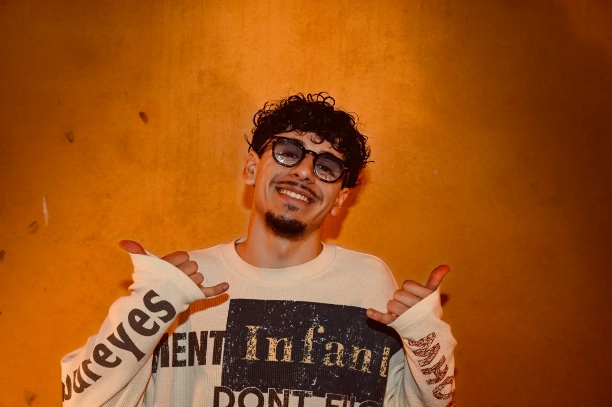

PortfolioÉdition 2026
Design, technologie et émotion.
Je conçois des expériences numériques : direction artistique, interfaces, 3D et interaction.
Noah
Designer numérique
Direction artistique
Design d'interface
Expériences web & 3D
Milsztajn
Manifeste
Je conçois des interfaces, des identités et des expériences web où le design et le code ne font qu'un. Peu d'éléments à l'écran, chacun à sa place, et un mouvement qui a du sens.
- 01Direction artistique
- 02Design d'interface & web
- 033D & motion design
- 04Interaction & immersion
(01)
Projets sélectionnés
Un projet réel, conçu pour une vraie galerie, et six concepts personnels : autant de directions artistiques pour pousser une idée jusqu'au bout.
Concepts & explorations
Projets personnels, imaginés et réalisés pour explorer un domaine. Ce ne sont pas des commandes clients.
(02) L'objet
Knit
Runner /01
Une vraie sneaker scannée, mise en scène en temps réel. Faites-la pivoter, zoomez, explorez ses détails, changez de coloris.
Détail —
Choisissez un point
Sélectionnez un repère sur la chaussure : la caméra vient se placer sur ce détail.
(03)
À propos

Je m'appelle Noah.
Mon parcours ne suit pas une trajectoire classique. Avant la création numérique, j'ai évolué dans des univers très différents, du travail manuel à la restauration. Ces expériences m'ont appris la rigueur, l'adaptabilité, le sens du détail, et à comprendre ce que les autres attendent vraiment.
C'est la curiosité qui m'a mené vers le design, le web et la création digitale. J'ai appris par moi-même : en explorant, en expérimentant, en construisant, et en recommençant quand quelque chose ne fonctionnait pas.
Aujourd'hui, je conçois des expériences numériques qui mêlent direction artistique, design d'interface, 3D et interaction. J'aime donner vie à une idée, travailler les détails et créer des univers qui ne se limitent pas à un simple écran.
Je ne veux pas seulement créer de beaux sites. Je veux créer des expériences qui marquent.
Ce que le terrain m'a appris
- Discipline
- Adaptabilité
- Sens du détail
- Organisation
- Réactivité
- Autonomie
- Travail d'équipe
- Apprendre vite
- Comprendre les besoins
- Résoudre les problèmes
Parcours
Cinq chapitres, une même exigence.
-
01 — Les premières expériences
Apprendre avec les mains
Travail manuel, paysage, apprentissage : ma découverte du monde professionnel. Le goût du travail bien fait, et l'idée qu'un résultat se construit geste après geste.
-
02 — Le terrain
Tenir le rythme
La restauration et le service, dans des établissements exigeants : Ambrosia à Beaulieu-sur-Mer, Léo Léa à Saint-Jean-Cap-Ferrat, le Café des Arcades à Valbonne. Un service ne pardonne pas l'approximation : il faut être rapide, précis, organisé, et attentif à chaque personne.
-
03 — La curiosité
Regarder les écrans autrement
La découverte du design, du web et de la création digitale. Comprendre pourquoi certains sites, certaines marques, certaines images marquent plus que d'autres, et vouloir savoir comment ils sont faits.
-
04 — L'autodidacte
Apprendre en faisant
Me former seul : étudier les univers qui m'inspirent, tester des outils, construire des projets, casser, recommencer. Chaque problème résolu devient une compétence, et chaque échec une indication.
-
05 — La création numérique
Aujourd'hui
Direction artistique, design d'interface, sites web, 3D, interactions et expériences immersives. Le même sens du détail qu'en salle, appliqué à l'écran.
(04) Me contacter
Créons quelque chose ensemble.
Une idée, un projet ou simplement envie d'échanger ? Je suis toujours ouvert à découvrir de nouveaux projets et à donner vie à de nouvelles idées.